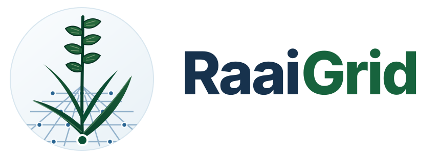
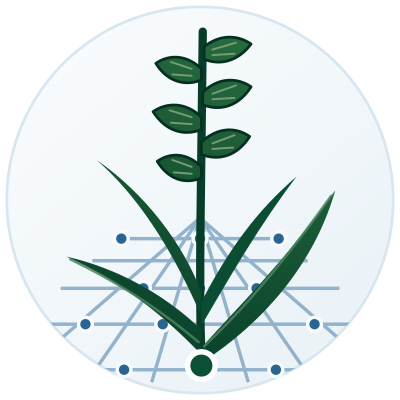

01
Design & development
Purpose-built websites with a clear information structure, responsive presentation, and appropriate technology choices.
- Business websites
- Responsive development
- Accessible interfaces

Contact ↗Andrey Antonowycz Web development · Netherlands
I build and maintain websites for small and medium-sized businesses (MKB), with particular attention to security, reliability, and long-term maintainability.
01 / WEB EXPERTISE
A business website should remain fast, secure, understandable, and straightforward to maintain after it goes live.
Purpose-built websites with a clear information structure, responsive presentation, and appropriate technology choices.
Hosting and deployment are treated as part of the website, with monitoring, backups, and recovery considered from the start.
Practical safeguards and ongoing technical care reduce avoidable risk and keep the website dependable over time.
02 / WORKING APPROACH
The work begins with the role the website needs to fulfil and continues through implementation, launch, and technical maintenance.
Clarify the audience, content, business requirements, and practical constraints.
Organize information and interaction around clarity, accessibility, and ease of use.
Develop, test, secure, and deploy the website with a reproducible release process.
Keep software updated, monitor availability, and verify that backups can be restored.
03 / ENGINEERING PRINCIPLES
$ raaigrid verify website --production
→ Secure connection [ENFORCED]
→ Restore procedure [VERIFIED]
→ Software updates [CURRENT]
→ Availability monitoring [ACTIVE]
✓ Website ready for day-to-day business.
A dependable website is not only well-built. It is securely operated, monitored, backed up, and maintained.

04 / PROFESSIONAL CONTACT
For website projects, maintenance enquiries, or technical questions.
Andrey Antonowycz · Netherlands